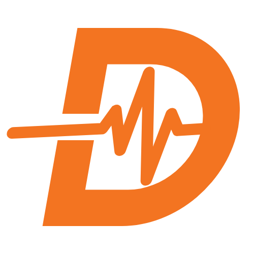
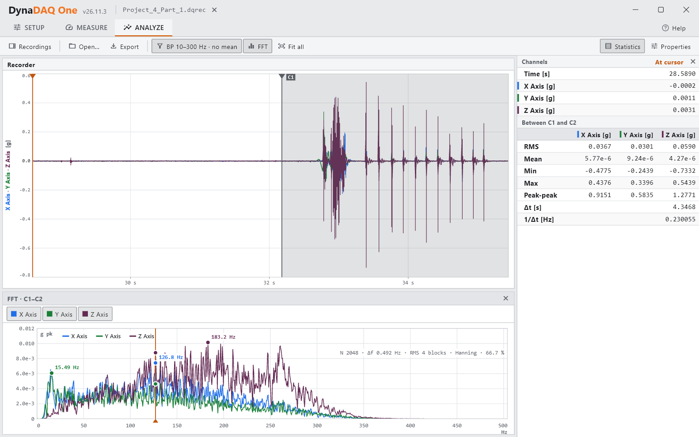

Kurulum, canlı ölçüm ve analiz tek yazılımda. Setup, live measurement and analysis in one program.
DynaDAQ One, Dynalabs cihazlarını USB’den tanır, ayarlarını yazılımdan yönetir, veriyi canlı grafik ve FFT ile gösterir. Kayıtları filtre, aralık istatistiği ve spektrumla analiz edip CSV ya da MATLAB dosyası olarak dışa aktarır. Aynı uygulama DynaDAQ-VR titreşim kaydedicinin SD kart kayıtlarını da açar. DynaDAQ One recognises Dynalabs devices over USB, manages their settings, and shows the data as live plots and FFT. It analyses recordings with filters, range statistics and spectra, and exports them to CSV or MATLAB. The same app opens the SD card recordings of the DynaDAQ-VR vibration recorder.
- Live grafik ve FFTplots and FFT
- C1–C2 aralık istatistiğirange statistics
- Butterworth LP · HP · BP filtreLP · HP · BP filters
- CSV · .mat dışa aktarmaexport
- Dark · Light temathemes

Ölçümün her adımı aynı uygulamadaEvery step of a measurement in one app
Otomatik cihaz tanımaAutomatic device detection
USB’ye takılan cihaz kendiliğinden bulunur; sensörler ve ölçüm aralıkları cihazdan okunur.A device plugged into USB is found on its own; sensors and ranges are read from the device.
Aynı oturumda birden çok cihazSeveral devices per session
İvmeölçer, VR ve GNSS aynı ekranda izlenir ve tek kayıt dosyasına birlikte yazılır.Accelerometers, VR and GNSS share one screen and record together into one file.
Canlı grafik ve göstergelerLive plots and meters
Eksenler ayrı ya da tek grafikte; anlık, min ve max değerler; Freeze ile dondurma.Axes separated or combined; actual, min and max values; Freeze to hold the view.
Canlı ve kayıtlı FFTLive and recorded FFT
Measure ve Analyze aynı FFT ayarını ve hesabını kullanır; canlı spektrum kayıtla aynı çıkar.Measure and Analyze share one FFT setup and computation, so the live spectrum matches the recording.
Filtre ve aralık istatistiğiFilters and range statistics
C1–C2 aralığında RMS, ortalama, min, max, tepe-tepe; sıfır fazlı Butterworth filtreler.RMS, mean, min, max and peak-peak over C1–C2; zero-phase Butterworth filters.
İçe ve dışa aktarmaImport and export
VR SD kart kayıtlarını açar; seçili aralığı CSV ya da MATLAB .mat olarak verir.Opens VR SD card recordings; exports the selected range as CSV or MATLAB .mat.
Cihaz ayarları yazılımdanDevice settings from the software
Bağlı her cihazın kendi sayfası vardır. Değiştirilen ayarlar işaretlenir, Apply ile cihaza gönderilir, Discard ile geri alınır. Ayarı cihaza yazılan alanlar ayrı bir simgeyle gösterilir. Each connected device has its own page. Changed settings are marked, sent to the device with Apply and reverted with Discard. Fields that are written to the device carry their own icon.
Cihaz kimliği ve durumuDevice identity and status
Uygulama cihazdaki sensörleri seri numarasından çıkarır ve yalnızca bunların ayarlarını gösterir. Cihaz saati her bağlantıda bilgisayarın saatine ayarlanır. The app reads the fitted sensors from the serial number and shows settings only for them. The device clock is set from the computer on every connection.
- KimlikIdentityCihaz adı, seri numarası, firmwareDevice name, serial, firmware
- DurumStatusPil ve depolama doluluğuBattery and storage usage
- Canlı akışLive streamCanlıda hangi sensörün akacağı (VR’da Digital ya da Piezo)Which sensor streams live (Digital or Piezo on the VR)
- KalibrasyonCalibrationCihazda saklanan katsayılar ve son kalibrasyon tarihiCoefficients stored in the device, last calibration date
Cihazın kendi kaydını ayarlamaConfigure on-device recording
Bilgisayardan bağımsız kayıt yapan cihazlarda kayıt ayarı da yazılımdan yapılır. DynaDAQ-VR’da her sensör için SD kart örnekleme hızı ve kayıt modu seçilir; uygulama SD hızının canlı akıştan farklı olduğu durumu ekranda yazar. For devices that record on their own, recording is configured from the software too. On DynaDAQ-VR you set the SD card rate per sensor and the log mode; the app tells you when the SD rate differs from the live stream.
- Kayıt moduLog modeStandard (açık kaldıkça) · Trigger (g eşiği aşılınca) · Timer (belirli süre)Standard (while on) · Trigger (above a g threshold) · Timer (set time)
- Storage modeTek tıkla VR USB disk olarak açılır, kayıtlar kopyalanırOne click opens the VR as a USB drive to copy recordings
Canlı veri, eksen eksen ya da tek grafikteLive data, axis by axis or on one plot
Cihaz bağlanınca veri akmaya başlar. Grafik penceresi ve Y ölçeği seçilir; Freeze ile görüntü dondurulur, C1–C2 imleçleriyle aralık seçilir, Fit all ile tüm veri sığdırılır. Data starts flowing as soon as a device connects. Set the plot window and Y scale; Freeze holds the view, C1–C2 cursors select a range, Fit all shows everything.
Canlı FFTLive FFT
Spektrum ölçüm sırasında güncellenir ve tepe frekansı göstergede okunur. Frekans ekseni fareyle ya da dokunarak yakınlaştırılır. The spectrum updates while you measure and the peak frequency shows in a meter. Zoom the frequency axis with the mouse or by touch.
- NoktaPoints1024 · 2048 · 4096 · 8192
- PencereWindowHanning · Flat-top · Rectangular
- OrtalamaAveragingRMS, 4–32 blok; örtüşme 0 / 50 / 66.7 / 75 %RMS, 4–32 blocks; overlap 0 / 50 / 66.7 / 75 %
KayıtRecording
Record, oturumdaki bütün cihazları tek .dqrec dosyasına yazar. Kayıt elle durdurulur ya da seçilen süre dolunca kendiliğinden biter. Sık kullanılan komutların klavye kısayolları vardır. Record writes every device in the session into one .dqrec file. Stop it by hand or let it end after a set duration. Common commands have keyboard shortcuts.
Kayıtları aralık aralık inceleyinWork through recordings range by range
Görüntüler DynaDAQ-VR ile alınmış gerçek bir kayıttan: 40 saniyelik, 1 kHz üç eksen ivme verisi ve içinde bir dizi darbe olayı. The screens show a real recording taken with DynaDAQ-VR: 40 seconds of 1 kHz three-axis acceleration with a series of impact events.
Kayıt listesi ve C1–C2 istatistiğiRecording list and C1–C2 statistics
Kayıtlar tarihe göre listelenir ve aranabilir; kaydın başlangıcı, süresi ve cihazları yan panelde görünür. Grafikte sürükleyerek C1–C2 aralığı seçilir, tablo o aralığı hemen hesaplar. Recordings are listed by date and searchable; start, length and devices show in the side panel. Drag on the plot to set C1–C2 and the table updates for that range.
- AralıktaIn rangeRMS · Mean · Min · Max · Peak-peak · Δt
- İmleçteAt cursorHer kanalın anlık değeriEach channel’s value
- İçe aktarmaImportVR SD kart kaydı (.dqconf), proje ve parça adıylaVR SD card recordings (.dqconf), named by project and part
FiltreFilters
Alçak, yüksek ve bant geçiren filtre: 4. derece Butterworth, sıfır faz. Ortalamayı (DC) çıkarma ayrı bir seçenek. İstatistik, FFT ve dışa aktarma işlenmiş sinyali kullanır; araç çubuğu açık filtreyi her zaman gösterir. Low-pass, high-pass and band-pass: 4th-order Butterworth, zero phase, with a separate option to remove the mean (DC). Statistics, FFT and export use the processed signal, and the toolbar always shows the active filter.
Veriyi kullandığınız araca taşıyınTake the data into the tools you use
Seçili C1–C2 aralığı CSV ya da MATLAB .mat dosyasına yazılır. Filtre açıksa işlenmiş sinyal aktarılır; dosyadaki veri ekranda gördüğünüzle aynıdır. Biçim Excel, MATLAB, Python ya da kendi raporlama aracınıza göre ayarlanır. The selected C1–C2 range is written to CSV or MATLAB .mat. With a filter on, the processed signal is exported, so the file matches the screen. The format adapts to Excel, MATLAB, Python or your own reporting tool.
- BiçimFormatCSV ve MATLAB .mat (GNSS kanalları CSV)CSV and MATLAB .mat (GNSS channels as CSV)
- AralıkRangeC1–C2 arası; bütün kayıt için imleçleri uçlara alınBetween C1 and C2; move the cursors to the ends for the whole recording
- SinyalSignalHam ya da filtrelenmiş (Analyze’daki filtre ve DC çıkarma uygulanır)Raw or processed (the Analyze filter and mean removal apply)
- KanallarChannelsHepsi ya da yalnızca grafikte görünenlerAll, or only those visible on the plot
- AyraçDelimiterVirgül, noktalı virgül ya da sekmeComma, semicolon or tab
- OndalıkDecimalNokta ya da virgül; Türkçe Excel dosyayı doğrudan açarPoint or comma, so regional Excel opens the file directly
- Zaman sütunuTime columnKayıt başından saniye, cihaz / yerel saat, UTC ya da ikisi birlikteSeconds from start, device / local clock, UTC, or both
- BaşlıkHeaderSütun adları ve # bilgi satırları: kaynak, cihaz, örnekleme hızı, başlangıç saatiColumn names and # info lines: source, device, sample rate, start time
- HassasiyetPrecisionAnlamlı hane: otomatik, 4, 6 ya da 9Significant digits: auto, 4, 6 or 9
- Çok cihazMulti-deviceHer cihaz kendi dosyasına, kendi başlangıç anıyla (_acc1, _acc2 …)One file per device, each with its own start time (_acc1, _acc2 …)
# DynaDAQ One export
# source: Project_4_Part_1.dqrec (VR Acc)
# device: Accelerometer
# sample_rate_hz: 1007.871511
# rtc_start: 2026-08-26 14:00:33.183594
time_s,X_g,Y_g,Z_g
0.123032,0.265684307,0.691476583,0.6651088
0.124024,0.267451763,0.686340928,0.667189181
0.125016,0.263515174,0.682970703,0.669346631
Koyu ya da açık tema, masaüstü ya da tabletDark or light, desktop or tablet
Setup › General’dan System, Light ya da Dark seçilir; grafik renkleri her iki temada okunur. Uygulama Windows’ta ve Android telefon ile tablette çalışır. Saat dilimi seçilebilir, kayıt klasörü değiştirilebilir, güncellemeler uygulamanın içinden denetlenir. Choose System, Light or Dark under Setup › General; plot colours stay readable in both. The app runs on Windows and on Android phones and tablets. Pick the time zone, change the recordings folder, and check for updates from inside the app.

Tek başına ya da hepsi birlikteOn its own or all together
DynaDAQ One her Dynalabs cihazını tek başına kullanır. Birlikte bağlanan cihazları ortak zaman ekseninde senkron gösterir ve tek kayıt dosyasına yazar. DynaDAQ One runs each Dynalabs device on its own. Devices connected together are shown in sync on one time axis and written to one recording file.
Dijital ve piezo ivmeölçerDigital and piezo accelerometer
Üç eksenli USB ivmeölçer. Sensör tipi, eksen sayısı, ölçüm aralığı ve seri numarası cihazdan okunur; kalibrasyon sensörün içinde saklanır. Three-axis USB accelerometer. Sensor type, axes, range and serial are read from the device, and calibration is stored in the sensor.
- KapasitifCapacitive8 g ya da 40 g model; aralık yazılımdan seçilir8 g or 40 g model; range selected in the software
- PiezoPiezoSabit aralık (25–2000 g), sensörden okunurFixed range (25–2000 g), read from the sensor
- BirlikteTogetherAynı anda 4 ivmeölçere kadar; her biri kendi kanallarıyla (X, Y, Z · X (2) …)Up to 4 at once, each with its own channels (X, Y, Z · X (2) …)
BPS
BPS GNSS alıcısı konumu, hızı, yönü ve yüksekliği verir. Measure’da araç haritada canlı izlenir; Analyze’da kaydın izi haritada oynatılır. The BPS GNSS receiver gives position, speed, heading and altitude. Measure follows the vehicle live on the map; Analyze replays the recorded track on the map.
- MeasureHarita, fix ve uydu sayısı, hız, yön, yükseklik, sıfırlanabilir mesafeMap, fix and satellites, speed, heading, altitude, resettable distance
- AnalyzeHaritada iz ve oynatma; en yüksek hız, hareket ortalaması, mesafeTrack and playback on the map; max speed, moving average, distance
- ExportGNSS kanalları CSV, koordinat biçimi seçilebilirGNSS channels to CSV with a selectable coordinate format
DynaDAQ-VR
Titreşim kaydedici. Modeline göre dijital ve piezo ivmeölçer taşır. USB’den canlı izlenir; bilgisayarsız çalışırken SD karta kaydeder. Bu sayfadaki Setup, Measure ve Analyze örnekleri VR ile alındı. Vibration recorder with digital and piezo accelerometers depending on the model. Watch it live over USB; it records to its SD card when running without a computer. The Setup, Measure and Analyze examples on this page were taken with a VR.
- USBCanlı akış, Digital ya da Piezo seçimiLive stream, Digital or Piezo
- SDStandard · Trigger · Timer kayıt, Storage mode ile kopyalama, Analyze’a içe aktarmaStandard · Trigger · Timer logging, copy via Storage mode, import into Analyze
Hepsi birlikteAll together
İvmeölçer, VR ve BPS aynı ekranda, aynı zaman ekseninde akar. İmleç, C1–C2 seçimi ve yakınlaştırma bütün cihazlara birlikte uygulanır. Tek Record bütün cihazları tek .dqrec dosyasına yazar; Analyze’da titreşimi aynı anın hızı ve haritadaki konumuyla birlikte okursunuz. Accelerometers, VR and BPS stream on one screen and one time axis. Cursor, C1–C2 selection and zoom apply to every device at once. One Record writes all of them into one .dqrec file, so Analyze shows vibration next to the speed and map position of the same moment.
Sahada telefon ya da tabletleIn the field with a phone or tablet
DynaDAQ One’ın Android uygulaması masaüstüyle aynı Setup › Measure › Analyze akışını kullanır. Cihaz USB ile telefona ya da tablete bağlanır; ölçüm, kayıt ve analiz bilgisayar olmadan yapılır. The DynaDAQ One Android app uses the same Setup › Measure › Analyze flow as the desktop. Devices connect to the phone or tablet over USB, and measuring, recording and analysis work without a computer.
- EkranScreenTelefon ve tablet; alt sekmeler, dokunarak yakınlaştırmaPhone and tablet; bottom tabs, pinch to zoom
- KayıtlarRecordingsMasaüstüyle aynı .dqrec dosyası; iki tarafta da açılırThe same .dqrec file as the desktop, opens on both
- Analyzeİstatistik, FFT, filtre, harita ve oynatmaStatistics, FFT, filters, map and playback
Windows ya da AndroidWindows or Android
Ofisteki bilgisayarda da, sahadaki tablette de çalışır. Aşağıdaki değerler rahat bir kullanım içindir; daha düşük donanımda da çalışabilir. Runs on the office PC and on a tablet in the field. The values below are for comfortable use; lower-spec hardware may also work.
Kurulum yönetici izni ister; gerekli Microsoft Visual C++ bileşeni pakete dahildir, internetsiz kurulur. Güncellemeler uygulamanın içinden denetlenir.Setup needs administrator rights; the required Microsoft Visual C++ runtime is bundled and installs offline. Updates are checked from inside the app.
Cihaz bağlamak için USB host (OTG) desteği ve OTG kablo ya da adaptör gerekir. APK yüklerken “bilinmeyen kaynaklardan yükleme” izni istenir.Connecting devices needs USB host (OTG) support and an OTG cable or adapter. Installing the APK asks for permission to install from unknown sources.
İnternet yalnızca harita için gerekir; ölçüm, kayıt, analiz ve dışa aktarma internetsiz çalışır. Kayıt boyutu için örnek: 1 kHz’te üç eksenli bir ivmeölçerin bir saatlik kaydı yaklaşık 45 MB; 4 kHz’te yaklaşık 180 MB. Internet is only needed for the map; measuring, recording, analysis and export work offline. Recording size, for example: one hour of a three-axis accelerometer at 1 kHz is about 45 MB, about 180 MB at 4 kHz.